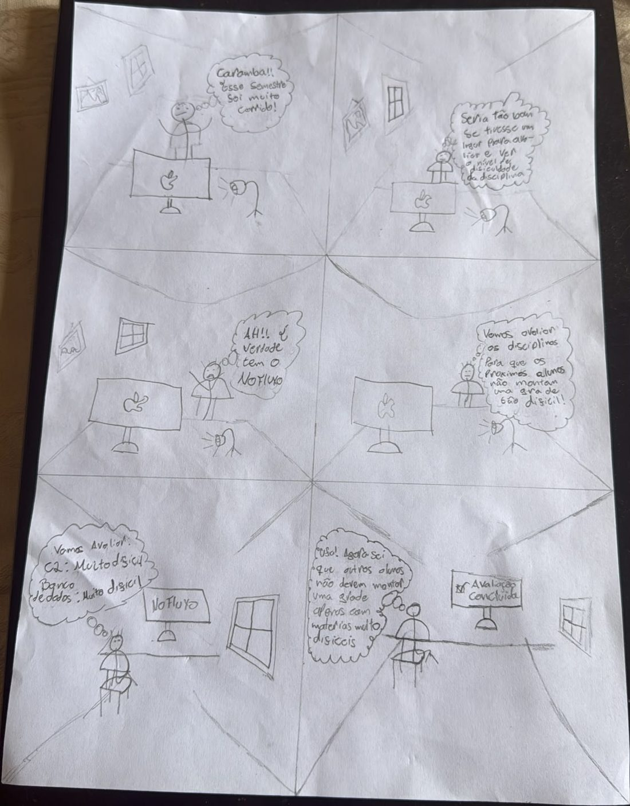

Relato dos resultados da avaliação do storyboard
Autor: Victor Andreozzi de La Rocque Couto, matrícula 221029285 · Revisor: a definir (validação pendente)
Funcionalidade: Avaliação de Disciplinas · Conteúdo desta página: relato dos resultados da avaliação do storyboard · Tabelas 3 a 6 · Figura 2
Vídeo da entrevista com usuário: https://youtu.be/mDZLnSCCeec
Outros artefatos do autor: Visão geral, funcionalidade e storyboard · Análise de tarefas: HTA e CTT · Relato dos resultados da avaliação da análise de tarefas · Planejamento da avaliação do protótipo de papel · Planejamento do relato dos resultados do protótipo de papel
O relato segue a estrutura recomendada por Barbosa e Silva (2010) e o planejamento do relato do autor. A sessão de avaliação foi gravada em vídeo: https://youtu.be/mDZLnSCCeec.
1. Objetivo e escopo da avaliação
Verificar se a narrativa do Storyboard da Avaliação de Disciplinas é verossímil para estudantes da UnB, se o objetivo da história (consultar avaliações para montar a grade e, depois, avaliar a disciplina para ajudar outros alunos) é compreendido e se a proposta de valor é percebida, identificando ambiguidades antes da prototipação das telas.
Escopo: os seis quadros do Storyboard (Figura 2; a descrição de cada quadro está na Tabela 2), que mostram um aluno que, depois de um semestre difícil, lembra do No Fluxo UnB, avalia as disciplinas que cursou e fica aliviado por ajudar os próximos alunos a não montarem uma grade só com disciplinas difíceis.

Fonte: Victor Andreozzi de La Rocque Couto (2026).
2. Metodologia utilizada
Entrevista estruturada com inspeção conjunta do Storyboard. O Storyboard impresso foi entregue ao participante, que leu os quadros e descreveu o que entendia de cada um e do contexto geral (leitura comentada, na linha do pensar em voz alta). Em seguida, o avaliador fez perguntas abertas sobre o realismo da situação, a clareza do objetivo da história e, indiretamente, a utilidade percebida. A Tabela 3 registra a sessão.
Além das perguntas abertas, o participante preencheu em papel uma tabela com notas de 1 a 5 (escala Likert: 1 = discordo totalmente, 5 = concordo totalmente) para Realismo, Clareza e Utilidade. As notas estão na Tabela 5, ao lado das respostas abertas.
| Sessão | Data e horário | Local | Duração | Avaliador | Participante | Registro |
|---|---|---|---|---|---|---|
| S1 | 23/10/2026, 9h50 | UnB, Campus Gama (presencial) | 8 min 23 s | Victor Andreozzi (avaliador único) | P1 | Gravação em vídeo |
Fonte: Victor Andreozzi de La Rocque Couto (2026).
3. Perfil dos participantes
Foi entrevistado um estudante da UnB, identificado pelo código P1 para preservar o anonimato. O próprio autor conduziu a sessão como avaliador único, acumulando os papéis de moderador, entrevistador e anotador.
| Código | Curso | Semestre | Idade | Perfil | Uso do No Fluxo UnB |
|---|---|---|---|---|---|
| P1 | Engenharia de Energia | 15º semestre | 25 anos | Aluno atrasado no fluxo | Nunca utilizou a plataforma |
Fonte: Victor Andreozzi de La Rocque Couto (2026).
4. Sumário dos resultados e achados
| Critério | Pergunta feita | Resposta do participante | Nota (1 a 5) |
|---|---|---|---|
| Realismo | A situação descrita reflete uma situação real e cotidiana de uso da plataforma? | Sim, “com certeza”. Considera a dificuldade de montar a grade um problema enfrentado pela maioria dos estudantes e uma situação normal no cotidiano do aluno. | 5 |
| Clareza | O objetivo (o aluno avaliar a disciplina ) está claro na história? | Sim. Identificou que, no final, o aluno usa a plataforma para que outros não montem a grade de forma muito difícil, ou seja, para ajudar outros alunos. | 4 |
| Utilidade | Sem pergunta específica; percebida na leitura espontânea. | Descreveu a plataforma como algo que “avalia as matérias” e ajuda o aluno a decidir a grade do semestre, “facilitando muito a vida do estudante”. | 4 |
Fonte: Victor Andreozzi de La Rocque Couto (2026).
- Nível de aceitação da narrativa e utilidade percebida: alto. O participante entendeu a história sem ajuda do avaliador: o aluno está em dúvida sobre quais disciplinas cursar por causa da dificuldade, usa o No Fluxo UnB e consegue decidir a grade.
- Aspectos positivos identificados: realismo do problema (montar a grade), clareza do objetivo colaborativo da avaliação e reconhecimento do valor da plataforma por um aluno atrasado no fluxo, perfil que mais sofre com a escolha de disciplinas.
- Problemas e ambiguidades por relevância: o participante não relatou problemas. A análise da sessão, porém, aponta três pontos que o storyboard não comunica bem (Tabela 6).
- Limitações: um único participante e um único avaliador, sem triangulação; comentários sobre o storyboard como um todo, e não quadro a quadro. Os resultados são indicativos, não generalizáveis.
| ID | Quadro | Descrição e justificativa | Severidade |
|---|---|---|---|
| A-01 | Quadro 5 | A tela de avaliação não indica que a avaliação é anônima. Ao descrever a história e o objetivo, o participante não mencionou o anonimato em nenhum momento, o que indica que a garantia não é percebida. Sem ela, o estudante pode ter receio de retaliação acadêmica ao avaliar disciplinas e professores. | 2 (Grande) |
| A-02 | Quadros 4 e 5 | O ato de avaliar é menos saliente que a consulta. Na leitura espontânea, o participante descreveu a plataforma como algo que “avalia as matérias” e ajuda a decidir a grade, sem citar que o personagem registra a própria avaliação; só identificou isso quando perguntado sobre o objetivo, apontando que aparece “no final”. | 1 (Leve) |
| A-03 | Quadro 5 | A avaliação mostrada se limita a “muito difícil” por disciplina. O quadro não representa a nota de cobrança do professor nem o comentário anônimo, que fazem parte da funcionalidade e da HTA, e o participante não comentou essas dimensões. | 1 (Leve) |
Fonte: Victor Andreozzi de La Rocque Couto (2026). Severidade conforme Barbosa e Silva (2010), escala de 0 a 3: 0 Cosmético, 1 Leve, 2 Grande, 3 Catastrófico.
5. Aspectos éticos e termos de consentimento
O TCLE não pôde ser impresso: foi apresentado ao participante em meio digital, lido por ele e aceito verbalmente na gravação. O avaliador explicou a finalidade do estudo (avaliação da plataforma No Fluxo UnB, com uso exclusivamente acadêmico dos dados), garantiu o anonimato, declarando que não usaria a imagem nem o nome do participante, e informou ao final que ele poderia desistir da participação a qualquer momento.
A gravação está publicada no YouTube como vídeo não listado, acessível apenas a quem tem o link.
6. Sugestões de redesenho e recomendações
- A-01 (Quadro 5): incluir na tela do No Fluxo um selo ou aviso “avaliação anônima”. Levar a mesma garantia para o protótipo de papel, no cabeçalho do formulário de avaliação.
- A-02 (Quadros 4 e 5): mostrar o personagem diante do formulário de avaliação, escolhendo as notas, para que o ciclo consultar → avaliar fique evidente; no Quadro 6, mostrar também a tela em que ele consulta as avaliações de outros alunos.
- A-03 (Quadro 5): representar as três dimensões da avaliação: nível de dificuldade, nível de cobrança do professor (escala de 1 a 5) e comentário anônimo.
- Para o protótipo de papel: testar com estudantes atrasados no fluxo, que reconheceram o valor da funcionalidade, repetindo a tabela de notas de 1 a 5 para comparar os resultados.
7. Declaração sobre o uso de IA Generativa
A ferramenta de IA Generativa Claude (Anthropic) foi usada para estruturar a página no padrão da Entrega 5 e extrair os dados da transcrição automática da entrevista gravada. O conteúdo, as decisões e a revisão final são responsabilidade do autor, Victor Andreozzi de La Rocque Couto, e a validação pelo grupo está pendente.
8. Referências
- BARBOSA, Simone Diniz Junqueira; SILVA, Bruno Santana da. Interação Humano-Computador. Rio de Janeiro: Elsevier / Campus, 2010.
- PREECE, Jennifer; ROGERS, Yvonne; SHARP, Helen. Design de Interação: Além da Interação Homem-Computador. Porto Alegre: Bookman, 2005.
Histórico de versão
| Versão | Data | Descrição | Autor(es) | Revisor(es) | Declaração de ferramenta de IA |
|---|---|---|---|---|---|
| 0.1 | 23/10/2026 | Criação da estrutura inicial do relato dos resultados da avaliação do storyboard | Victor Andreozzi de La Rocque Couto | A definir (validação pendente) | Claude (Anthropic): criação da estrutura inicial da página no padrão da Entrega 5; o conteúdo será do autor |
| 0.2 | 23/10/2026 | Preenchimento com os dados da entrevista (sessão S1, participante P1) e registro dos problemas A-01 a A-03, com base nos seis quadros do storyboard (Figura 2) | Victor Andreozzi de La Rocque Couto | A definir (validação pendente) | Claude (Anthropic): preenchimento a partir da transcrição automática da entrevista e dos documentos do autor; revisão e resultados finais são do autor |